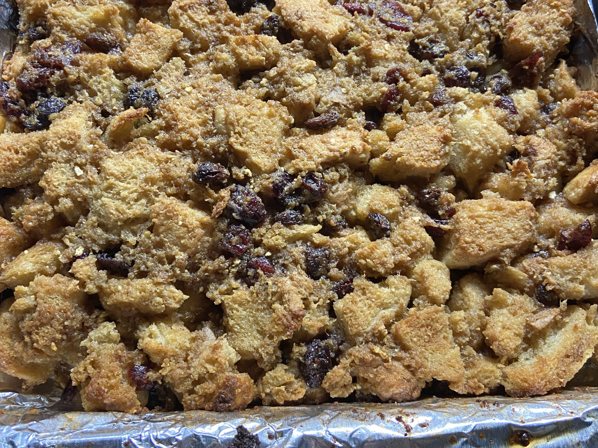

British Bread Pudding

Source
Description
Nothing like a bit of bread and butter pudding ... wait a tick ... this is just bread pudding? Is it any good? Guess we'll find out!
Ingredients
- 6 ¼ cups cubed whole wheat bread
- 1 ¼ cups milk
- 1 egg, beaten
- ⅓ cup butter, softened
- ¾ cup raisins
- ¼ cup dried mixed fruit
- ½ cup brown sugar
- 1 tablespoon ground nutmeg
- 1 tablespoon ground cinnamon
Steps
- Preheat oven to 375 degrees F (190 degrees C).
- In a large bowl, combine bread and milk, and set aside to soak for 5 minutes. Then stir in egg, butter, raisins, mixed fruit, brown sugar, nutmeg, and cinnamon. Mix well. Press the mixture into a 9-inch square baking pan.
- Bake in preheated oven until golden and firm to touch, about 35 minutes. Leave in baking pan to cool, then cut into squares.